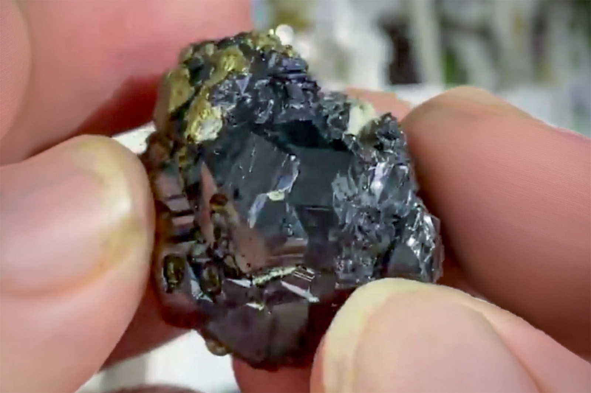

Sphalerite with Chalcopyrite, Minor Galena
"Striated Sphalerite Crystals with Chalcopyrite"
II-10021
2nd Sovetskii Mine, Partizanskoe Pb-Zn deposit (Partizansky), Dalnegorsk, Dalnegorsk Urban District, Primorsky Krai, Russia
Purchased 4/11/2026 from Dean Lagerwall Minerals for $25.98
Core Collection • In Collection
Details
Storage Type: Flat
Storage Location: 000 None
Size class: Miniature (0)
Dimensions: 2.9 × 2.2 × 3.3 cm
Estimated Mass: 19.9 g
Luster: Average, Vitreous